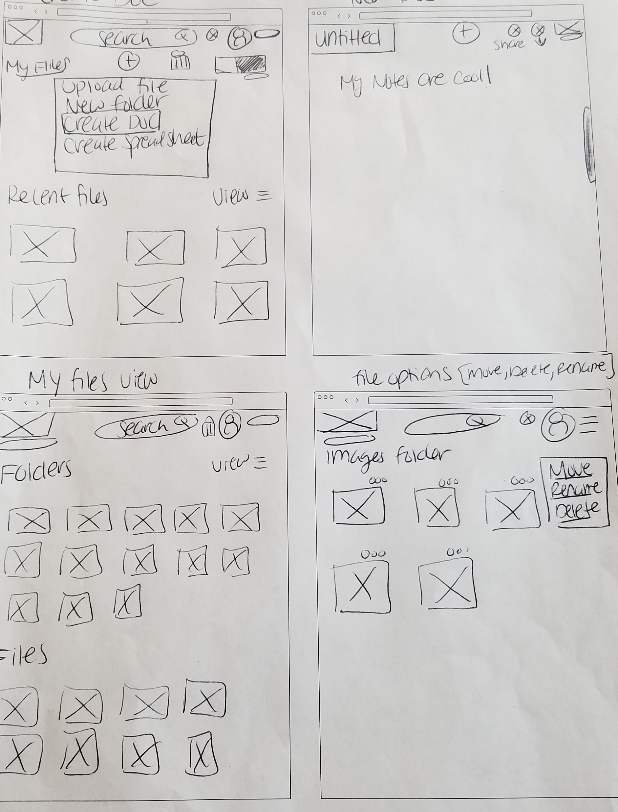
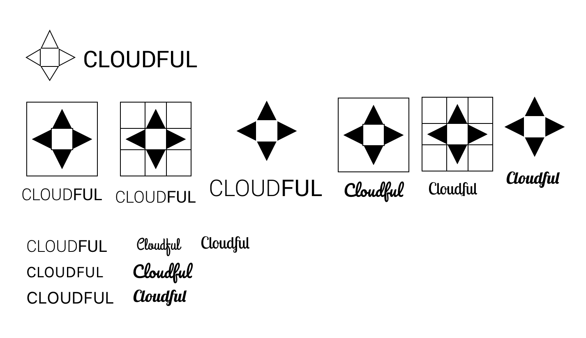
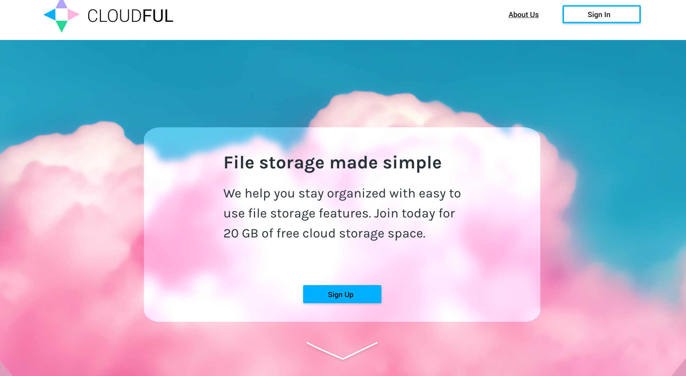
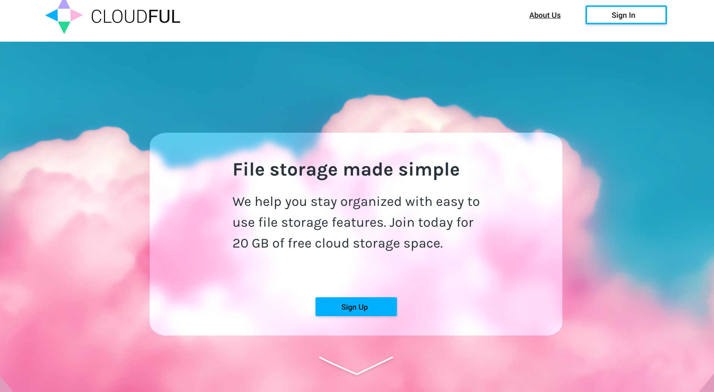

CloudFul
Summary
Cloud storage is growing in users but space for users is still limited. The goal of CloudFul is to provide increased storage space for personal use. The industry is more focused on business, but there is a growing need for personal storage.
Roles
-
UX Design
-
Visual Design
-
Branding & Identity
Deliverables
-
User Survey Analysis
-
Competitive Analysis
-
User Personas
-
User Stories
-
User Flows
-
Sitemap
-
Mood Board
-
Branding
-
Style Guide
-
Paper Prototype
-
Wireframes
-
User Testing
Tools
-
Sketch
-
Adobe XD
-
Figma
-
Usability Hub
-
Draw.io
-
Miro
-
Zoom
-
QuickTime Player
Problems
-
Sharing large files over email or text is difficult and often fails to send to the receiver.
-
The organization of files can be stressful with too many files.
-
It is difficult to share docs for collaboration when you can't connect in real-time for feedback.
-
Space on desktops and mobile devices is limited.
Solution
-
With CloudFul you get more storage space for free or at a reduced cost.
-
Easily upload files & create folders to organize them.
-
Create your own docs and share them with anyone.
-
Backup your files from your desktop or mobile device for file security.
Assumptions
-
People use cloud storage to upload files & share content.
-
People use cloud storage to organize their files.
-
People use cloud storage to save content from the web such as, links and videos.
-
People use cloud storage to create content and collaborate with others.
-
People use cloud storage on both desktop and mobile devices.
-
People use cloud storage during the evening, when they are off work or school.
The Design Process
Research
I started my research with a survey. I analyzed data from 40 participants. The goal was to test my hypotheses and assumptions while learning the problems users face. My research findings helped me narrow down my focus and address issues that are the most important to users.
50%
Organize their files using cloud storage
56%
Pay for cloud storage services
76%
Prefer desktop over mobile version for cloud storage user interface
98%
Said uploading files is the most important thing for them
80%
Use content creation tools for real-time collaboration
85%
Want to share files with others
62%
Use cloud storage throughout the day
60%
Do not save links, articles, or media content from web
Competitive Analysis
Cloud storage is a crowded market with big name brands like Google & Dropbox. These companies offer not enough storage space for users and are targeted to businesses rather than people. There is room for a niche service providing users with targeted features to help them organize their personal files.

User Personas
Personas were developed based on survey and user interviews. It was clear that there were two types of users.The user who needs cloud storage to upload photos and share, and the user who uses cloud storage for more than its storage feature.
Brad Smith
22- year-old student from Seattle

I have a lot of large data files, so I like to back-up all my files to the cloud to make sure they are safe and secure.
Goals
- I want to share files with others.
- I want to create docs, spreadsheets, and notes I can share with my team.
- I want to upload my files to the cloud for easy storage and access.
Frusturations
- Collaborating with my team on projects is difficult when they have to email back and forth.
- Its hard to keep track of my files when all of my devices have different ones.
Molly Neal
32-year-old mom from New York City

“I take so many pics of my daughter and sharing them with family is great!”
Goals
- I want to share links of photos and videos of my daughter.
- I want to organize my photos into folders.
- I want to backup my files from my phone to my cloud.
Frusturations
- I am running out of space on my phone to store my photos & videos.
- I have large image & video files that need to be easily shared with friends & family.
- Sending images in emails have a limit, why can't I share my whole album?
- My photos are in random places, is there a way to organize them into folders or categories?
User Stories & Flows
Sketches
Keeping my user stories & flows in mind, I sketched the first version of CloudFul. From my research, I learned 75% of users prefer desktop version over mobile, so I focused my efforts on a desktop cloud storage platform. I also learned Google & Dropbox both use list & thumbnail tile views, so I tested this out with my sketches & wireframes.


Wireframes
I used Adobe XD to develop low-fidelity clickable wireframes.
User Testing
I put my wireframes to test with a few users. The goal here was to observe the functionality of the website with the users and to see how they react to certain tasks.
Key Feedback from Testing
- The homepage layout needs to display features before introducing the pricing plan.
- The homepage copy needs to be clear for users.
- Icons for folder and file options were too small.
- The context window for file and folders was too small.
- The start typing instructions copy for creating a doc was unnecessary for an intuitive website like CloudFul.
Branding
I learned a couple of things from my research, I learned Google and Dropbox both use lighter colors for their user interfaces & this was validated with my survey where I found 62% of users use cloud storage during the day. From this, it was clear my branding would consist of lighter colors rather than a dark theme.
Logo Design
CloudFul is targeted for personal use, not for business. This meant staying clear from a professional and dull look. CloudFul makes cloud storage fun with its playful and colorful vibe. The colors are fun and relaxing for the user. The name CloudFul incorporated the playful and colorfulness of the brand. The colors used in the brand are not bright or jarring but very subtle and calm.
Color Palette
The brand colors were selected based on creating a simple and calm user experience. It set the tone for creating a secure and loyal environment. The color blue was used throughout the cloud storage website to make users feel safe with their file storage. Blue is also present in the the text color.

Fonts
Fonts were chosen based on readablilty and friendliness. Roboto is a sans-serif typeface. It has a geometric feel but has open and friendly curves. Karla is a quirky and fun sans-serif font. It has a more natural feeling.
A&B Testing
Once branding was finalized I created high-fidelity mockups. I tested these mockups with 47 users, using Usability Hub preference testing.
65% of users found the pink cloud homepage layout more accessible.
 

81% of users found the left sidebar more accessible.

User Testing
After A&B testing I tested the high-fidelity mockups with users. This time paying attention to how they react to the visual design and branding.
Key Feedback from Testing
From user testing, it was clear I needed to make a few changes.
- The color was too feminine for users.
- The sign in screen for returning users was actually the create account form.
- The scroll function needed to be fixed for the homepage layout. Users couldn't figure out how to scroll further down.
- The buttons did not match the brand style guidelines. They needed to be more consistent with branding.
Iterations
I made changes based on the feedback I received from user testing. I made the design more consistent with the brand. The homepage layout was changed to make the design more readable, consistent with branding, and accessible.
Final Product
After round two of user testing and iterations, the final mockups for CloudFul were presented. You can see how the style guide and brand guidelines were used to create a more consistent prototype. The style guide changed as the brand became more solidified through testing.
Features
CloudFul has three main features. The ability to organize, create, and share files.
Organize
Easily create folders and place files into them for better organization.
Create
Create documents and share them for real-time collaboration.

Share
Upload files and access them on any device wherever you go.
Conclusion
The cloud storage industry is growing as more technology integrates it automatically with devices. At first, I expected there to be no need for another cloud storage service. But, through my research I found the amount of space users are given is low and they mostly use it for personal use. It was surprising to see most cloud storage services targeting business users rather than personal.
CloudFul is a good solution to the problems presented in this case study. The features I included in this prototype were the most important to users and were great for the MVP. Although, if I had more time I would include organization tools to help tag and categorize files.